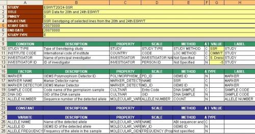

ICIS Known Genes
From ICISWiki
One of the most urgent problems in ICIS data management is the storage and retrieval of Known Genes. Shawn Yates has taken a very pragmatic approach which gets the ball rolling, but as we come to consider query and display of known genes we need to think whether this approach is general enough.

Template for storing Known Genes (S. Yates)
Known genes or marker alleles of specific germplasm can be stored as Variables. They can be defined by Property=MOLECULAR_VARIANT and Scale=MV_ID and a variety of Methods for their detection. The question now is how to link them with associated biological traits. This should be done through the GEMS where the MV_ID links to associated traits (either directly or through some collective ID). Shawn has taken a different, pragmatic approach, he has added a Factor to the study with the Property PHENOTYPIC_TRAIT, Scale=ID and levels being the PROPERTY_ID corresponding to the associated trait. The difference is important for two reasons.
- Genes may be pleiotropic – ie associated with more than one biological trait
- marker alleles can become associated with traits (and therefore known genes) through later studies and the power of the information is then to have germplasm with these marker alleles popping up as possessing the interesting traits
Shawn’s approach is pragmatic because the most common request is to display known genes by specified associated traits so he just has to look up the OUnits indexed by the specificed levels of PHENOTYPIC_TRAIT and a GID to report the alleles for that GID. In my system the GEMS would have to be queried for all MV_IDs associated with the specified biological trait (also through the Property ontology) and the result set intersected with records for germplasm having any MV_ID.

Template for storing Marker Alleles (G. McLaren)
The TRAIT variable in the Known Genes Template occupies the same position as the MARKER Factor in the Marker Alleles Template. This has Property POLYMORPHISM_DETECTOR and is associated to a MARKER_DETECTOR by a protocol. Does this give us a clue about how to integrate known genes into GEMS? We need to assign Known Gene alleles an MV-ID and they must have an associated MARKER DETECTOR and POLYMORPHISM_DETECTOR. These could have type 'KNOWN GENE' to distinguish them from MARKERS. Then the Template could be modifies as follows: